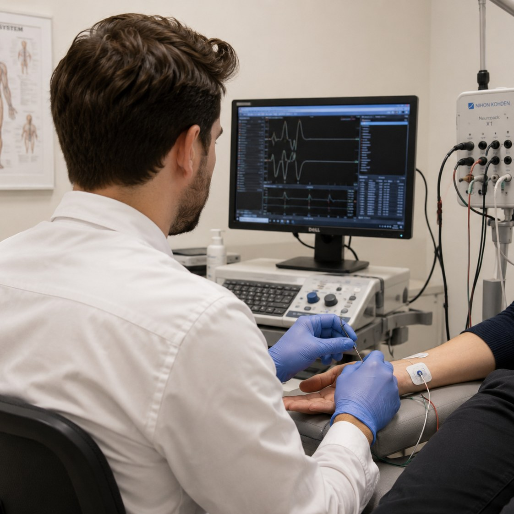
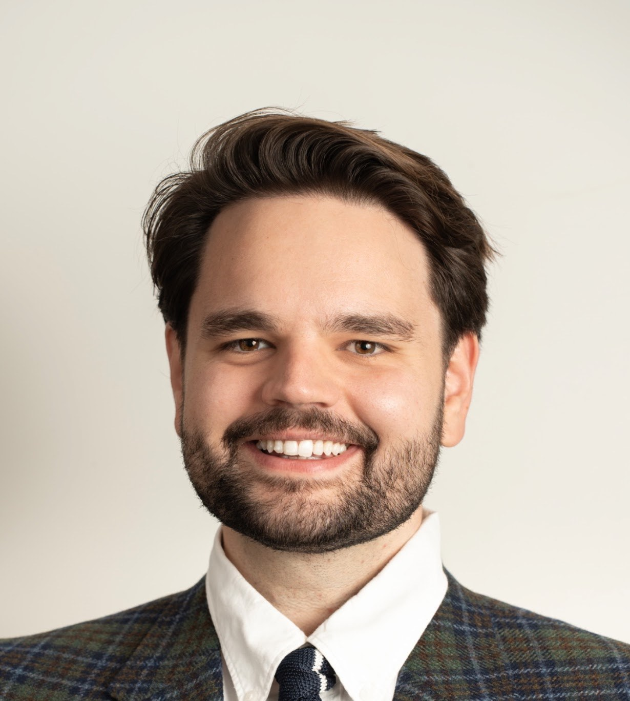
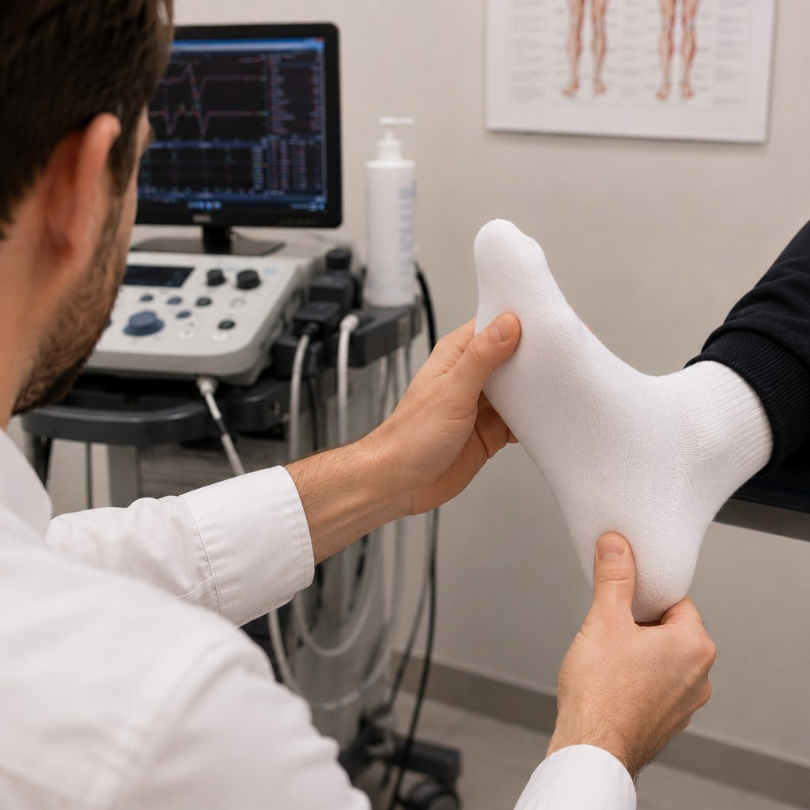
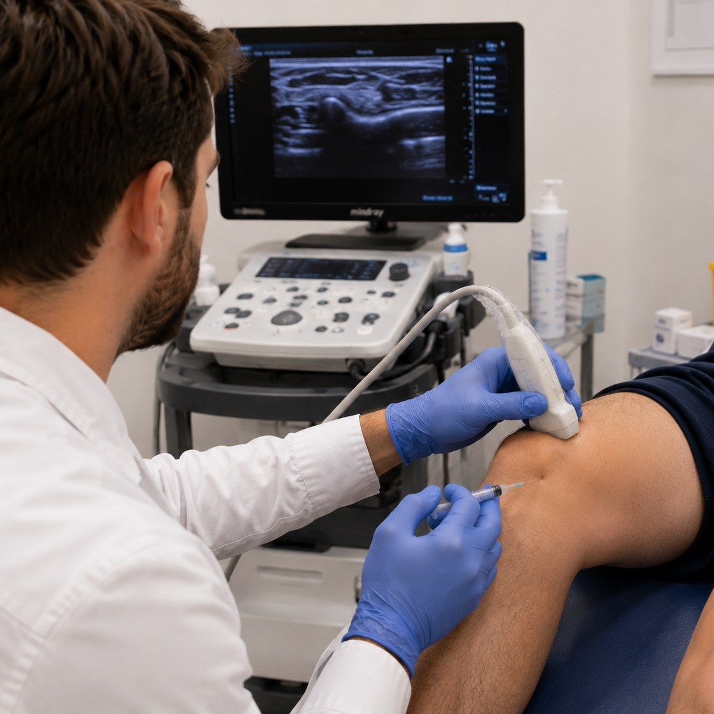
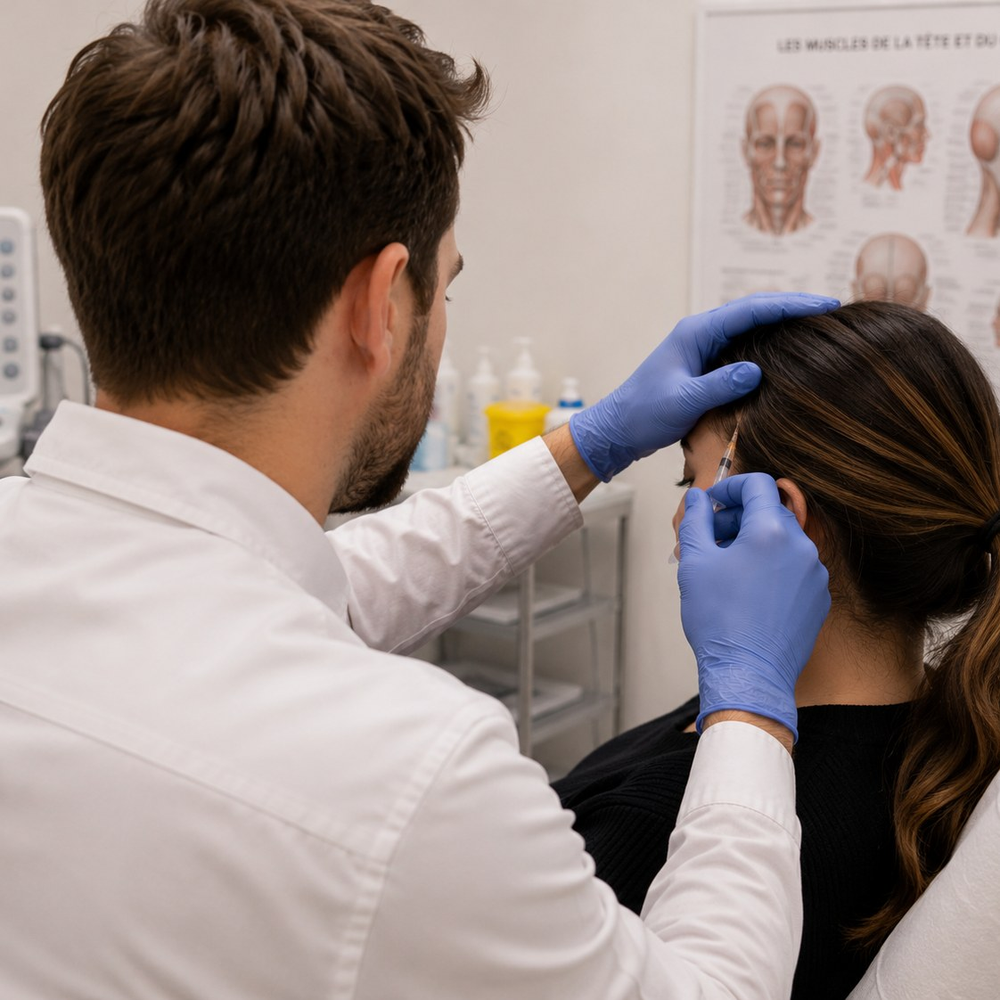

01Electromyography (EMG)
Nerve and muscle testing to help clarify neuromuscular conditions.
Learn moreDr Andrei Bursuc · Physiatrist
A practice focused on neuromusculoskeletal medicine, mobility and independence.
To refer a patient to Dr Bursuc, the referring physician can complete the form and send it by fax.
Referral fax: 514 558-8775
After the referral is received, it is reviewed. If a consultation can be offered, the patient will be contacted about next steps.
Clinique de physiatrie CDN
5515, rue Saint-Jacques Ouest, bureau 101
Montréal, Québec H4A 2E3

Areas of practice
Assessment and treatment in physical medicine and rehabilitation.

01Nerve and muscle testing to help clarify neuromuscular conditions.
Learn more
02Real-time assessment of muscles, tendons, joints and nerves.
Learn more
03Joints, tendons and nerves; corticosteroid, viscosupplementation or PRP when appropriate.
Learn more
04Assessment and injections, including for spasticity and chronic migraine.
Learn moreA physician referral is required. The referring physician can use the form above and send the request by fax.
Background
A specialist in physical medicine and rehabilitation, Dr Bursuc practises in Montréal at Clinique de physiatrie CDN. His practice includes electromyography, spasticity management and ultrasound-guided injections.
For clinicians and students
Interactive tools to explore anatomy, neurological localization and neuro-orthopaedic techniques.
Open the education toolsFor patients